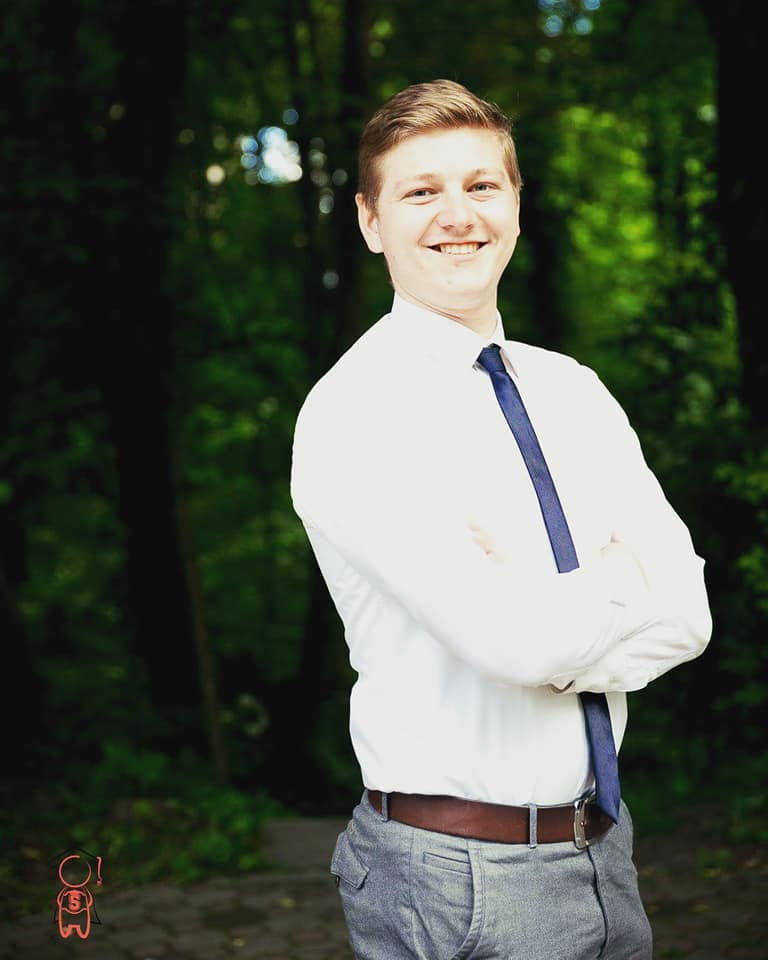

About Me
Hi everyone. My name is Nicolae. I am 26 years old . I am a specialized electrical engineer with a master's degree. I like active sports like football, tennis, ping pong, volleyball, basketball and many other games. I love reading and long discussions with interesting and intellectual people. I like objective debates. I am a person who puts family, friends and close people on the foreground. I would be very pleased if I worked in a large programming company. I am firmly convinced that these companies could give that life a try that would make me not feel bored. To always be in action and in some tension. I like good jokes a lot. I'm a fan of stendup, especially the uderground. The number one fan in this direction is George Carlin. He is, for me, a standard of humor of sarcasm, wisdom and life experience. In general I am a very curious person who is interested in a large spectrum of domain with different vectors, starting with the music ending with high performance technologies. .